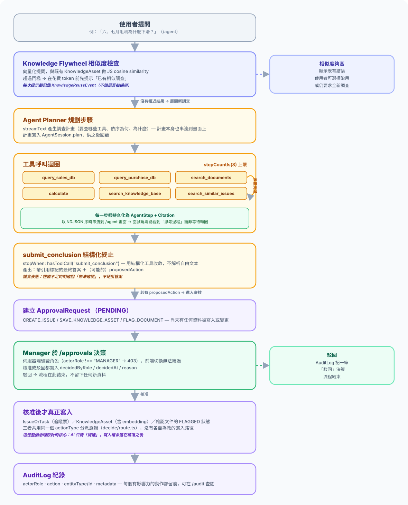
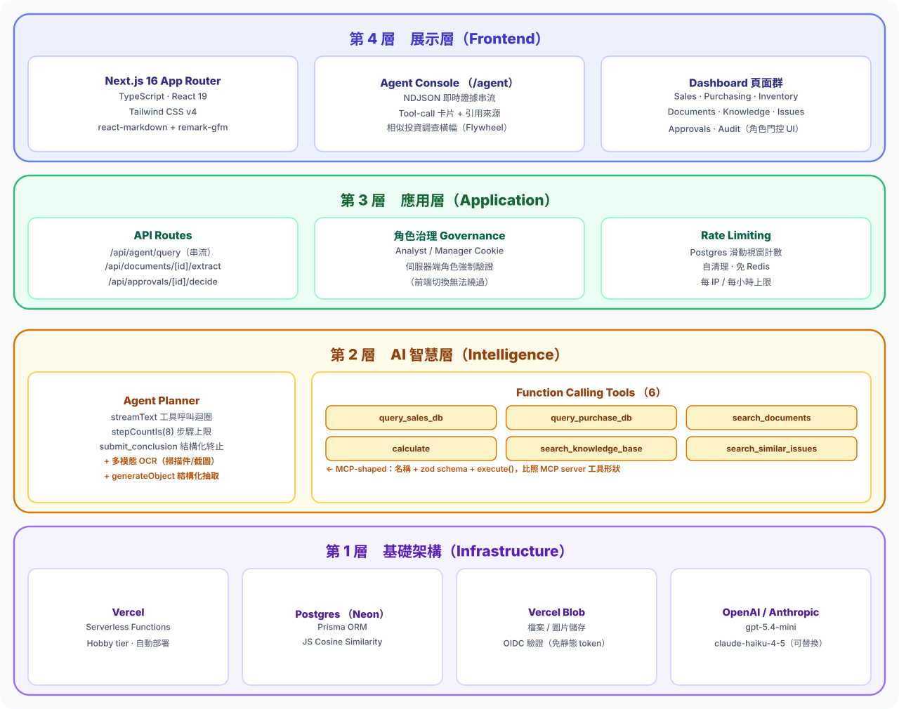
Built entirely alone, end to end: the data model (Prisma schema across 5 groups), a reproducible synthetic-data generator (fixed RNG seed, with 5 deliberately planted anomaly stories), the agent tool-call loop and its 6 tools, the document-extraction and rule-based cross-validation pipeline, the Knowledge Flywheel (similarity retrieval + reuse tracking), the governance layer (role permissions, approval queue, audit log), 9+ frontend pages and the UI/UX, deployment and CI, and all of the documentation (README, architecture-decision notes). No collaborators, no outside design files.
This is a portfolio demo with no real production traffic, so I won't quote "N hours saved" or "N% more efficient" numbers with no real users behind them. What's honest to say instead is what this system concretely proves:
Supplier price hikes, customer churn, inventory buildup, stockouts, chronically late supplier deliveries — the agent surfaces every one of them, citing the actual database numbers and document content that produced the answer, not a lucky guess.
Propose → approve → write → audit — all four steps have real, queryable data behind them. It's not a UI mockup of a flow that doesn't actually happen.
Resolve an issue, write down the fix — ask a similar question later, and the agent actually cites that resolution and declines to suggest a duplicate. That's the Jira-style historical-case integration working at small scale, not a claim on a slide.
69 synthetic documents mix clean tables, forwarded-email-style casual invoices, handwritten-style receiving slips, and scanned images/screenshots — run through real vision OCR plus structured extraction, not just the cleanest format.
The combination of an MCP-shaped tool layer, enforced citations, and an approval gate is a direct answer to "how do you bring agentic AI into an existing system like Jira without losing control" — answered with a running system, not a slide.
The screens below follow one real investigation from the live demo, start to finish.
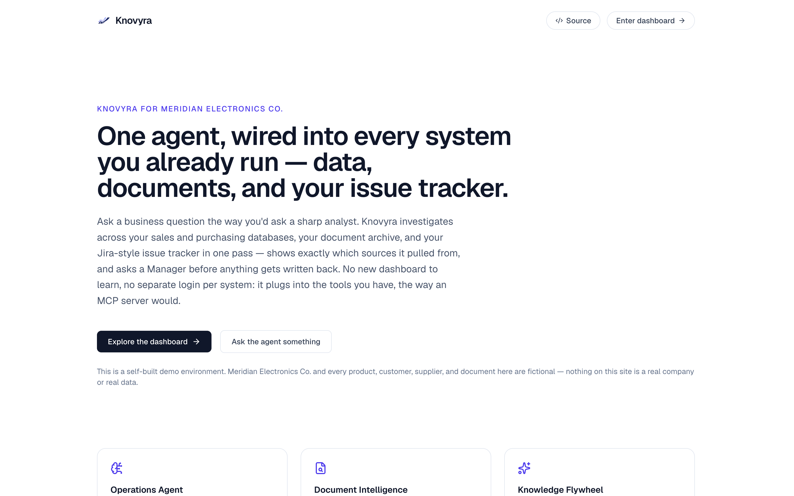
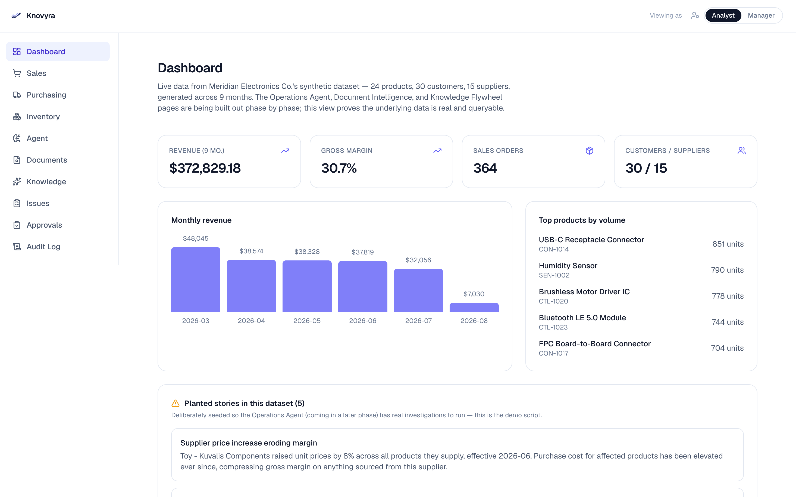
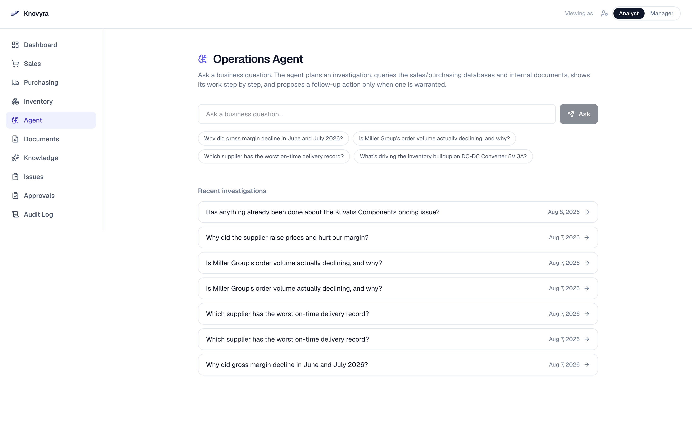
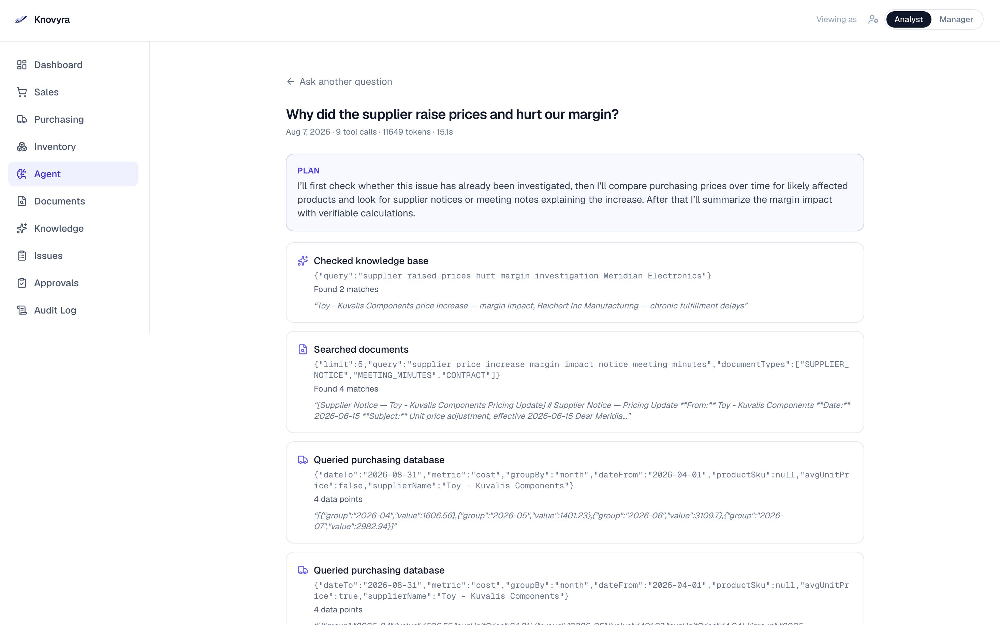
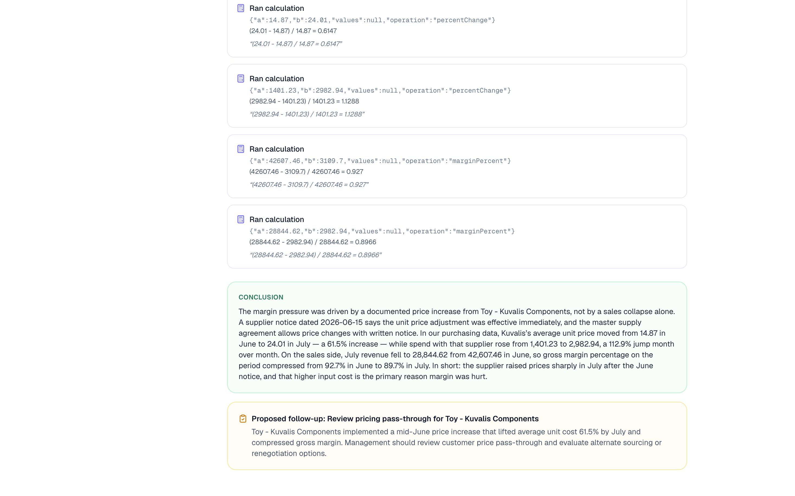
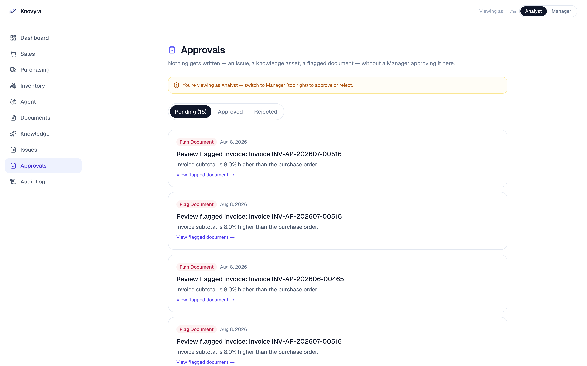
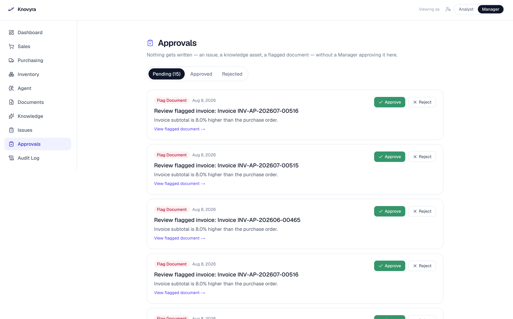
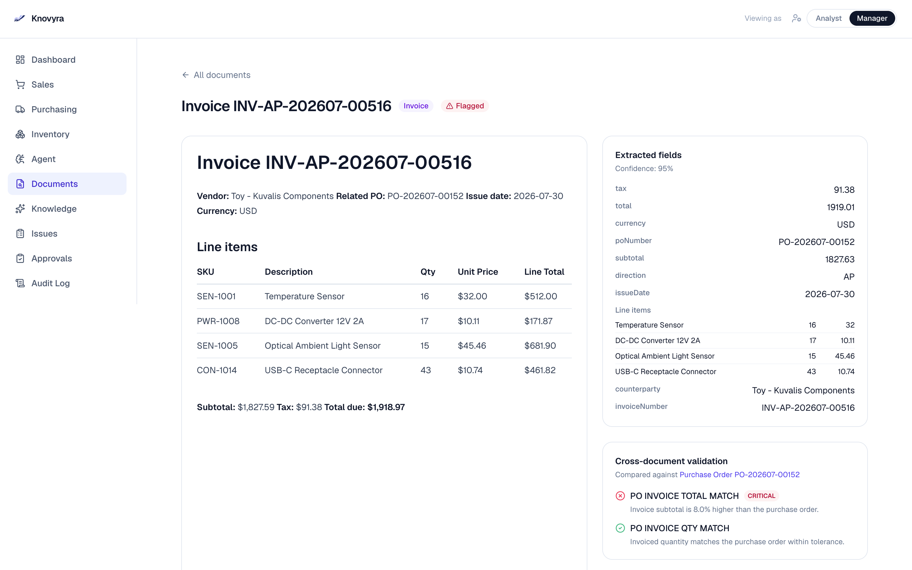
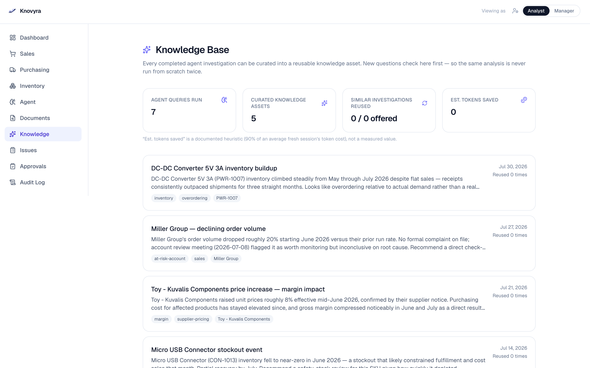
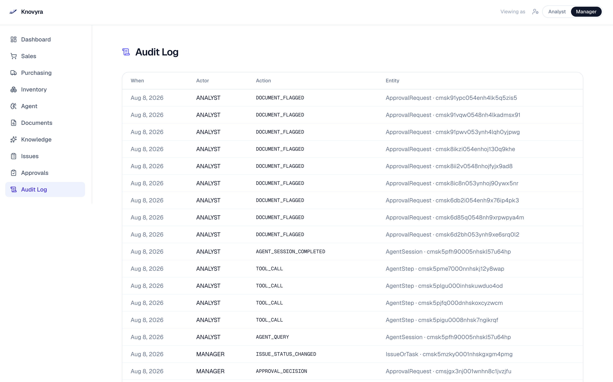
關於 Yun 的作品集，直接問我